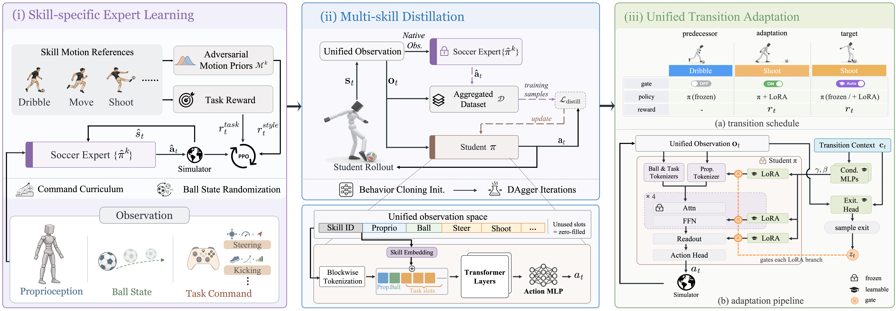

Off-ball movement
Runs, cuts and turns to a commanded direction and speed, without the ball.
MESSI · Multi-Expert Soccer Skill Integration
We consolidate eight independently trained soccer experts into a single physics-based policy, then teach it to hand off between skills without forgetting any of them.
8
experts
One per skill, each trained with its own motion prior, task reward and curriculum.
1
student
A skill-conditioned transformer, distilled from all eight through one observation space.
+1
adapter
A gated, shared low-rank adapter on the frozen student that learns the handoffs between skills.
The repertoire
Off the ball, on the ball, in the air, and back on your feet. Every clip is physics simulation, played back in real time. Click any clip to enlarge it.
Runs, cuts and turns to a commanded direction and speed, without the ball.
Keeps the ball close while following a commanded direction and speed.
Stops the ball under the sole mid-dribble, then turns 180°.
Strikes with the commanded foot and technique, at a commanded direction and power.
Plays ground and lofted passes at a commanded direction and power.
Controls an incoming ball on the first touch, with the chest or the foot.
Meets a ball in the air with the head.
Recovers to standing after a fall.
Shooting
Each shot follows a commanded foot, technique, direction and power. The overlay compares the commanded target with the ball's actual speed and direction.
Transitions
Each row starts from one handoff state and runs it three ways, side by side.
Results
One shared adapter is the most successful on every transition and every chain, and it leaves the native skills exactly where the student had them.
Paper Tables 2 and 5. Transitions start from identical predecessor-generated states; chains are continuous episodes with no resets, 512 per chain.
Long horizon
Long, uncut episodes, played back in real time.
Skill chaining
Get up, trap, dribble, stop and turn, shoot, run off the ball. Each clip is one uninterrupted episode of our full method; when it ends, the next one slides in.
Two players face to face, both run by the same policy. Each traps the incoming ball, passes it back and steps back to its spot.
Real time. Two co-simulated episodes share one ball, handed over at each kick;
How it works

Each skill is learned by its own expert, with a motion prior from reference motions, task rewards and a skill-specific curriculum. Shooting is trained for accurate command tracking, dribbling for stable ball control.
A unified observation layout maps every expert's body, ball and command inputs into one space. Behavioral cloning initializes a skill-conditioned transformer student; dataset aggregation (DAgger) refines it with expert labels on the states the student visits.
With the student frozen, an online, shared transition adaptation method using a context-conditioned low-rank adapter, enabling joint adaptation across multiple skill pairs without retraining individual experts.
Another body
A simulated G1 humanoid dribbling, rendered in the same studio.
@misc{peng2026messimultiexpertsoccerskill,
title={MESSI: Multi-Expert Soccer Skill Integration for Physics-Based Character Control},
author={Xiaogang Peng and Jiaqi Zou and Lei Zhong and Sirui Xu and Huaizu Jiang},
year={2026},
eprint={2611.33011},
archivePrefix={arXiv},
primaryClass={cs.CV},
url={https://arxiv.org/abs/2611.33011},
}